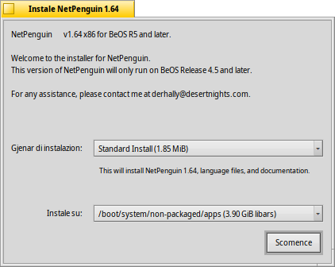
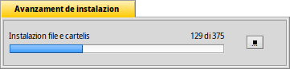

InstaladôrPachetsVecjos
InstaladôrPachetsVecjos
| Deskbar: | Nissune vôs, di norme inviât fasint dopli-clic suntun file supuartât. | |
| Posizion: | /boot/system/apps/LegacyPackageInstaller | |
| Impostazions: | nissune |
InstaladôrPachetsVecjos al è un instaladôr par pachets di BeOS che a son tal formât PKG. Al da une interface grafiche facile-di-doprâ, che, in Haiku, e jude a vê une rapide instalazion dai pachets.
Al ven eseguît in automatic cuant che tu ciris di vierzi i file cun estension .pkg.
Il barcon principâl al da acès a dôs configurazions:
- gjenar di instalazion (a seconde che il disvilupadôr al vedi metût plui di une (standard) opzion di instalazion).
- ubicazion de instalazion (instale su) (si puedin sielzi dome discs fis/partizions interiis, no percors personalizâts)
Dopo vê fat clic su Scomence il procès di estrazion e di instalazion a scomençaran.
A chest pont a puedin vignî fûr erôrs e avertiments, che a puedin dî che a mancjin librariis e dipendencis par podê eseguî il program. Al podarès jessi necessari instalâ chei pachets prime di cirî di instalâ il program desiderât.
Cuant che la instalazion e je finide, il package al varès di vignî fûr tal menù des aplicazions di Deskbar.